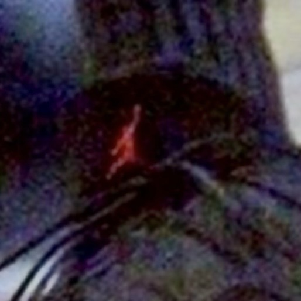
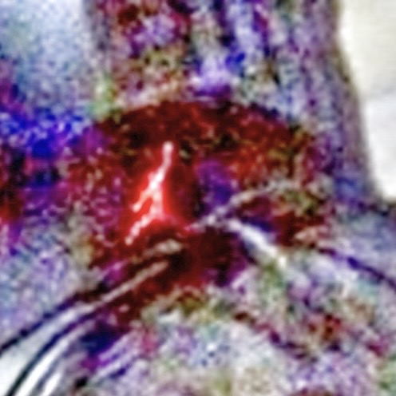
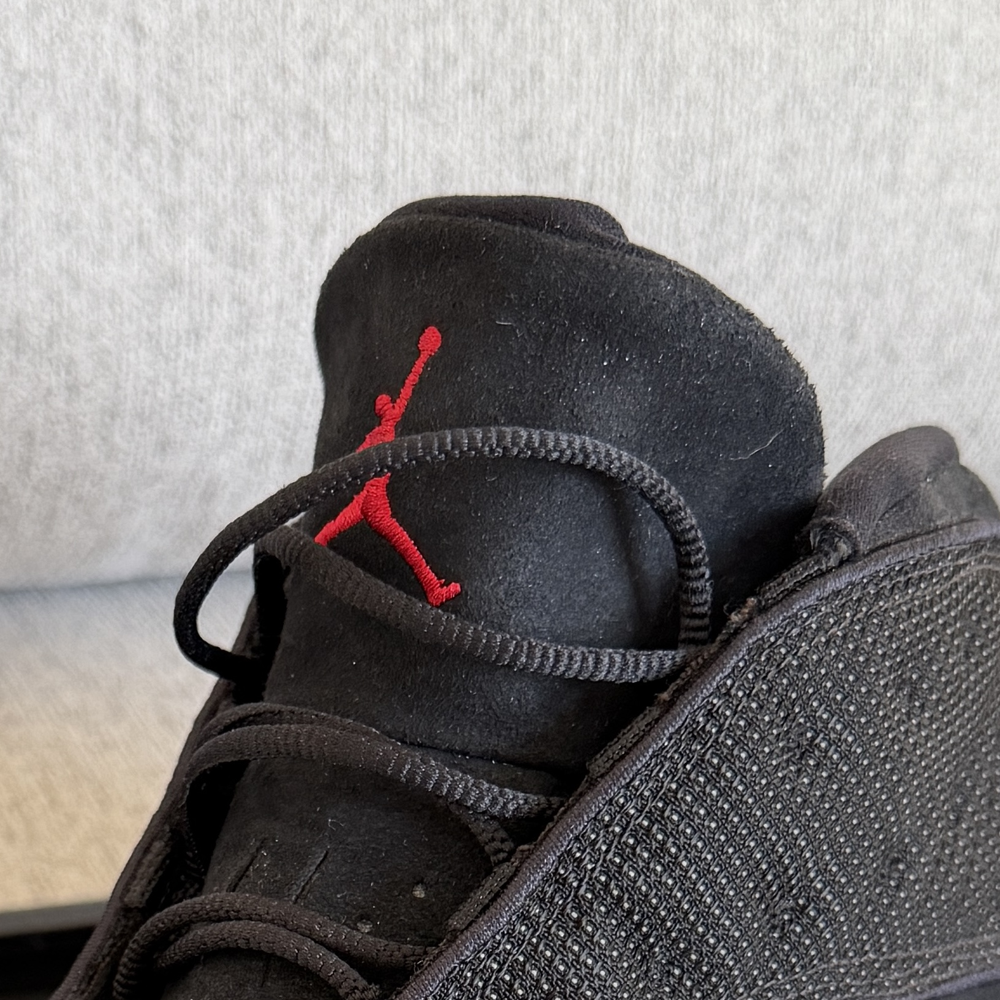
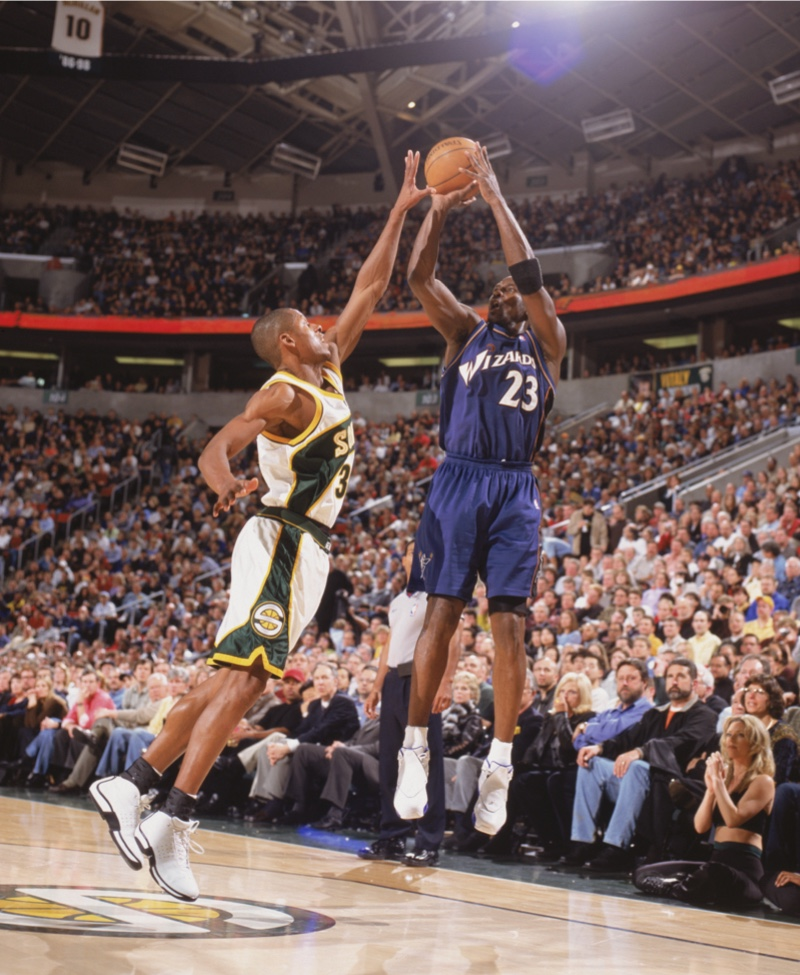
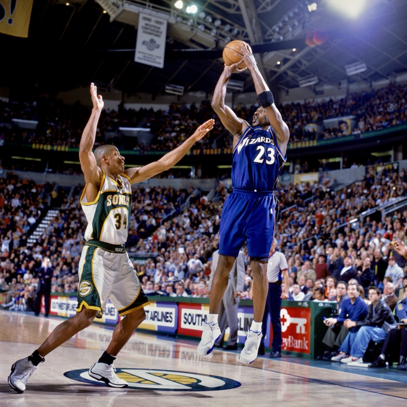
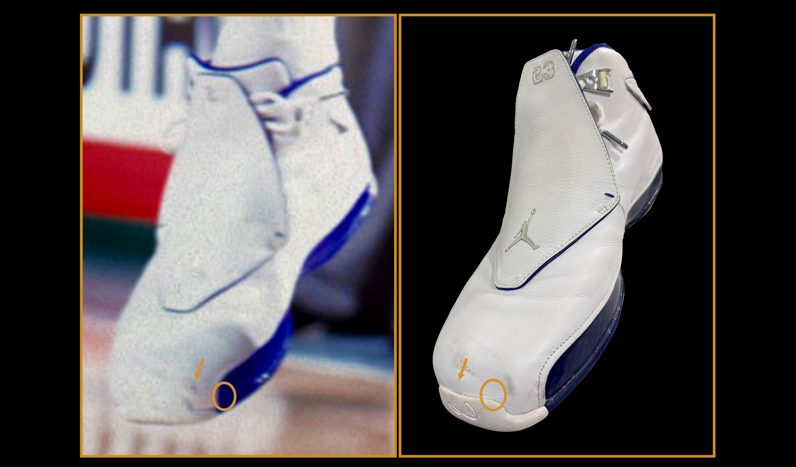
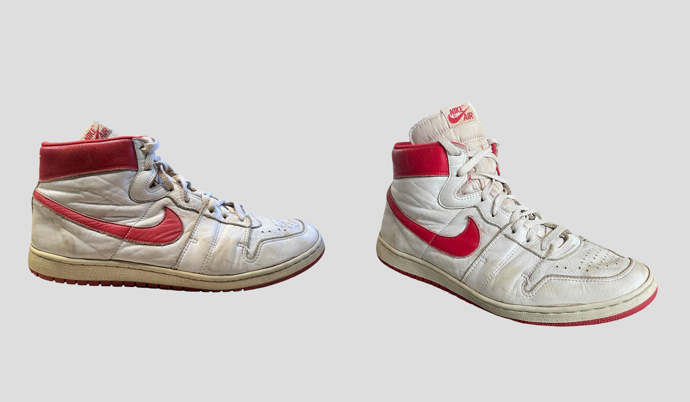
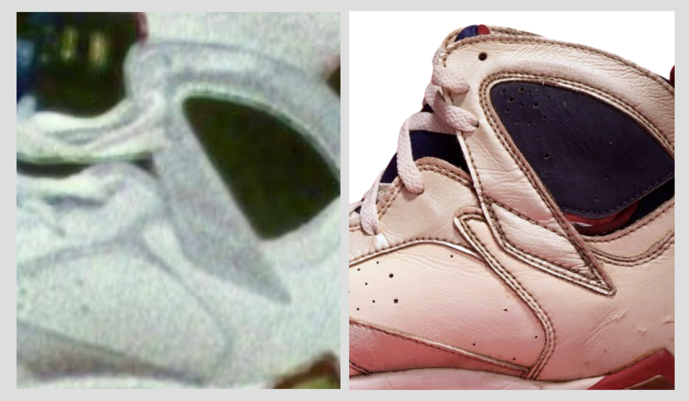
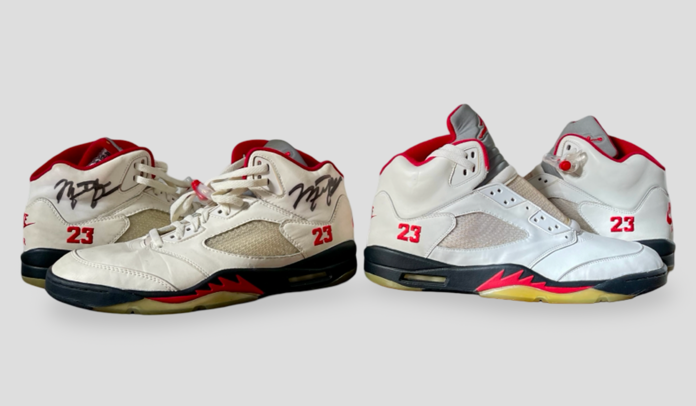

Sneakers rarely provide that luxury. They may occupy only a small part of the frame, moving, partly obstructed or blurred by motion and low-resolution footage.
Sneaker photomatching requires a different research methodology. The standard of evidence should not be lower; the evidence has to be understood differently.
A Small Detail That Changed the Question
During recent research on a Michael Jordan game-worn pair, a small light-colored abrasion or discoloration along the front edge of the red rubber forefoot caught my attention. It was subtle in the original game image, but became significantly more visible after HDR-style tonal enhancement.
That raised a question: had the enhancement revealed an existing characteristic, or altered the photograph enough to make it unreliable? Processing can create halos, exaggerate compression artifacts and strengthen weak tonal changes. It should never manufacture the evidence it is being used to prove.
The enhanced frame could not stand alone. The original source showed the lighter interruption in the same location, and additional photographs from the game appeared to show it along the same portion of the red forefoot.
A separate photograph revealed a pronounced crease in the nearby black leather. An in-hand photograph of the surviving shoe showed a corresponding crease in the same general location.
The evidence had grown beyond one bright spot in a processed image: multiple characteristics were recurring across photographs and corresponding to features on the surviving shoe.
HDR Examination: A Separate Tongue Example
The three panels below demonstrate the examination method on a different shoe. Here, the feature under examination is a subtle raised area along the upper edge of the tongue, above and to the right of the red Jordan logo. The red-forefoot abrasion discussed in the preceding account is not pictured.
Read the comparison from left to right: the original source, the same source with HDR-style tonal enhancement, and the corresponding area on the physical shoe. The enhanced view is an aid to examining the original photograph; it is not an independent piece of evidence or a substitute for corroboration.
Original Source

HDR-Enhanced Examination

Physical Shoe

One Frame Is Rarely the Whole Story
A faint mark appearing once in a low-resolution image may have limited value.
Once a mark has developed, its repeated appearance across later images, in the same anatomical position on the shoe and corresponding to a physical characteristic on the surviving pair, carries more weight.
Repetition matters, but so does chronology.
A scuff does not have to appear in every photograph of the same shoe. It may develop during play, leaving an earlier image without the mark and a later image with it. That progression can help establish a timeline of use rather than indicate a different pair.
Building that timeline is an essential part of the research. Photographs should be placed in their documented order using game dates and, where available, the sequence of play within a game. An earlier view, a later view and the surviving artifact can then be compared to determine whether the evidence is consistent with the development of wear over time.
A mark being absent is not the same as a mark being invisible. Before treating an earlier photograph as evidence that a scuff had not yet formed, the relevant area must be sufficiently clear and exposed to view. Angle, lighting, obstruction, motion blur and low resolution can all prevent an existing mark from being recorded.
The first photograph in which a scuff is visible establishes its earliest observed appearance in the available record, not necessarily the exact moment it formed. Where the image order or visibility is uncertain, that uncertainty belongs in the interpretation.
The surviving shoe must also be considered within that chronology. It may preserve the characteristic seen in the later photograph along with additional wear acquired afterward. The question is whether the photographs and artifact support a consistent progression of use, not whether every image shows identical wear. A wear sequence can support an attribution, but it does not establish the identity of the shoe on its own.
Abrasions, creases, outsole wear, construction details, chronology and provenance can strengthen one another when they independently support the same conclusion.
Not every characteristic carries the same evidentiary weight. A general crease common to a particular model may provide useful context, while an irregular abrasion, unique outsole wear pattern or production anomaly may be far more individualizing. The strength of a match depends not simply on how many similarities are identified, but on how distinctive those similarities are and how independently they are corroborated.


The Archive places the Butler photograph at 10:05 remaining in the first quarter and the Reinking photograph at 0:38 remaining in the fourth quarter, with Washington leading 74–72. Although Jordan’s shooting poses are similar, the backgrounds differ: spectator seating is visible behind him in the Butler image, while scorer’s-table advertising and courtside personnel appear in the Reinking image. These details provide context for the Archive’s sequence assessment and must be considered alongside camera position. The comparison below examines two toe-area scuffs in the Reinking photograph from the final 38 seconds against the surviving shoe.

The Shoe Is Not a Static Object
A sneaker changes shape while being worn. A foot expands and supports the upper; running, cutting, jumping and landing apply different forces through the shoe. Toe boxes compress, side panels bow and collars spread.
Creases can deepen, flatten or appear to shift as the foot moves and tension changes. An empty shoe on a table should not be expected to reproduce its exact appearance during competition.
The more meaningful comparison is a crease’s underlying path, position and relationship to surrounding construction, interpreted under the conditions of each photograph.
Lacing Changes the Shape
Lacing tension also has a considerable effect on the appearance of a sneaker.
A tightly laced game shoe is being pulled around the foot. The eyestays and side panels move upward and inward. The tongue may sit differently. The width of the forefoot can change. Creases can become more pronounced or migrate visually as the surrounding material is placed under tension.
A surviving game-worn shoe photographed unlaced or loosely laced may therefore appear wider, flatter or more relaxed than the same shoe did while Jordan was wearing it.
This is another reason that direct silhouette comparisons can be misleading.
Footwear has to be understood as a flexible object rather than a fixed shape.
When Two-Dimensional Comparisons Become Misleading
Sneaker photomatching can become unreliable when physical characteristics are compared as though they occupy fixed positions in a flat image. Creasing is especially important: the researcher must understand how the upper behaves with a foot inside it before comparing it with an empty shoe.
In one prior research review, differences in the apparent height and spacing of leather creases were cited as evidence against a match. But a crease is not a printed line. Its visible position and depth can change as the upper is supported, loaded, flexed, tightly laced, or photographed under different lighting. In low-resolution historical imagery, only the strongest portion of a crease may be recorded at all.
During play, the foot supports the leather from inside while movement and lacing place it under tension. Once the foot is removed, that internal support is gone and the upper can relax inward. A crease visible across the supported toe box may therefore appear as a deeper indentation when the shoe is empty. The same area can look different without representing a different underlying wear characteristic.
The meaningful comparison is the crease’s underlying path and its relationship to seams, panel edges and surrounding wear, interpreted under the conditions of each photograph. An empty shoe should not be expected to reproduce the precise depth, spacing or outline seen while the upper is supported by a foot. Equally, a difference should not be dismissed without examining whether the material and construction can account for it.
Viewing geometry introduces another complication. A separate comparison attempted to evaluate the position of a surface mark by aligning it vertically with an outsole feature. The in-hand shoe was photographed in a relatively direct side profile, while the game shoe was airborne, rotated, and photographed from a different camera position. Under those conditions, foreshortening and perspective alter the projected relationship between features that exist on different planes of the shoe.
Later deterioration is a separate, case-specific consideration. Where physical examination documents separation or shifting between bonded sole components, it may explain a changed notch or contour. Sole movement does not occur in every shoe and should not be assumed; its timing may also remain uncertain.
These observations do not automatically establish a match. They illustrate why apparent differences—particularly in creasing—must be interpreted within the physical and photographic conditions that produced them.
Understanding the Material
Understanding the material is essential. Leather, suede, mesh, rubber and painted surfaces respond differently to wear, movement and photography. A lasting leather crease may resemble a temporary fold in another material. Suede changes tone with the direction of its nap; painted surfaces can crack, chip or discolor.
Reflective components add another complication. The angle and intensity of flash can make a panel appear brighter, flatter or more textured than it does under arena lighting.
Without that context, a reflection can be mistaken for wear, an abrasion dismissed as glare, or a change in apparent texture misread as evidence of a different pair.
Distance, Perspective and the Lens
Sneakers are also affected by how sports photography is created.
Because sneakers are often photographed from a significant distance with telephoto lenses, their apparent proportions can be affected by perspective compression, cropping, motion blur and reduced depth cues.
This can cause the shoe to appear flatter, wider, shorter or less three-dimensional than it would in direct physical examination.
These differences should not automatically be interpreted as inconsistencies between the photographed shoe and the physical pair.
A courtside image taken from relatively close range can present a shoe very differently from a photograph made from beneath the opposite basket.
The model has not changed.
The photographic conditions have.

Provenance Has a Place
Photographic evidence is only one part of the research.
Provenance can also contribute significantly to a sneaker attribution when it is documented and evaluated critically.
A pair connected directly to a team employee, ball boy, player, trainer or other contemporary source carries historical information that should not simply be ignored because it is not visible in a photograph.
At the same time, provenance should not replace visual research.
It should be tested by it.
If a firsthand account ties a pair to a particular game, the photographic record can be examined to determine whether the surviving shoes are consistent with the footwear visible during that event.
When provenance and physical evidence independently arrive at the same conclusion, each strengthens the other.
The goal is convergence.
Thorough Research Must Test the Attribution
While researching a pair of Olympic Air Jordan VIIs, I began assembling a chronological timeline of the photographs I could locate and reviewing other pairs that had previously been sold. The work extended beyond the pair in front of me: I was comparing the shoes visible across games with the construction details and reported histories of other surviving pairs. As that research developed, I noticed a discrepancy involving another auctioned pair and its attribution to a particular game.
The shape of a leather panel on that pair appeared different from the corresponding panel on the shoe visible in photographs identified with the attributed game. The question concerned the cut and contour of a constructed panel, rather than a changing crease or a wear mark that might have developed later. It emerged through the broader work of building a timeline and comparing multiple pairs, and called for investigation alongside the provenance supporting the attribution.

There is an important distinction between insufficient evidence to confirm a match and physical evidence that contradicts one. A construction difference must be evaluated against viewing angle, the condition of the shoe and the dated photographic record. If it establishes that the surviving shoe is incompatible with the shoe worn in the claimed game, describing the attribution as “likely” does not resolve the contradiction.
A sneaker is assembled from multiple pieces, making construction a central part of proper photomatching. The shapes and cuts of individual panels, their proportions, their overlaps and the way they join adjoining components all deserve examination. A similar overall silhouette or an isolated wear mark is not enough; the researcher must understand how the shoe is built and assess whether those construction details are consistent with the photographed shoe, accounting for perspective, flex and condition. Materials, production differences, wear and the sequence of available photographs provide the context for that comparison. Every game attribution requires that same depth of research, whether it concerns a routine regular-season appearance or a championship final. The significance of the game, the value of the shoes and the reputation of the authenticator do not change the standard of evidence. Thorough research must actively seek and explain conflicting evidence, as well as identify details that support a match.
Understanding Production
Knowing the retail version of an Air Jordan is not enough to understand Jordan’s on-court footwear. His pairs could include early samples, transitional constructions, player-specific specifications and modified components.
Research must establish when and how a pair was produced, when Jordan wore it, whether other versions were in circulation and where it fits within the model’s development. An early sample may have construction details that differ from those used in the later retail-production version.
Even two pairs made exclusively for Jordan, both carrying sample tags, can differ in materials, panel construction, padding, tooling and finishing. Those differences must be understood before deciding whether a surviving pair is consistent with a photographed shoe.
The Archive identifies the left pair below as an early promotional sample, assembled by hand as a one-off. The right pair was made specifically for Jordan during the model’s retail-production period, using the tooling and processes associated with that broader run. It is still a Jordan-specific pair, not a retail pair.
The distinction concerns stages and methods of production. It is not simply a division between handmade and machine-made shoes, nor should all samples be expected to share one specification.

Key Differences in the Early Sample
The Archive’s examination identifies four construction differences in the early promotional sample on the left, compared with the later Jordan-specific pair on the right:
- Thinner interior lining: The early sample has a thinner inside liner.
- Thinner padding: Less padding gives the early sample a less bulky upper.
- Larger side-netting window: The early sample has a larger netted opening in the side panel.
- Lower profile to the floor: The early sample sits lower to the ground than the later pair.
These distinctions illustrate why two pairs made specifically for Jordan should not be assumed to share identical construction. The overview helps orient the comparison; lining and padding thickness are findings from physical examination rather than measurements established by this photograph alone.
Understanding the Athlete
How the athlete interacted with his shoes also matters. Long-term study of photographs, surviving pairs and documented examples can reveal recurring habits of fit, rotation, modification, preparation and handling.
Not every research characteristic needs to be publicly disclosed. Some knowledge comes from years of studying one athlete’s footwear. Understanding Jordan’s shoes also means understanding how he used them.
A Sneaker Researcher Has to Understand Sneakers
This is where sneaker photomatching differs most sharply from jersey research.
A researcher can be extremely skilled at photographic comparison and still misinterpret footwear if they do not understand its construction, materials, production history and physical behavior.
My own approach to game-worn footwear developed from sneaker collecting first.
The study of Air Jordan models, samples, materials, production differences and Michael Jordan's game use came before the broader study of game-worn memorabilia.
That background changes the way an image is read.
A crease is not simply a line.
A bright area is not automatically damage.
A flattened silhouette is not automatically a different shoe.
A material behaving differently under flash is not necessarily an inconsistency.
Each observation has to be interpreted within the physical and historical context of the shoe itself.
Photomatching Through Convergence
Sneaker photomatching brings together physical characteristics, repeated photographic features, material behavior, production history, chronology, provenance and the athlete’s use of the shoes.
A jersey may occasionally be identified by one extraordinary characteristic. A sneaker may require several independent details pointing toward the same conclusion. The standard of proof does not change; the path to reaching it does.
It is the study of an object — its construction, materials, production, use, provenance and photographic record — until all of those pieces begin telling the same story.